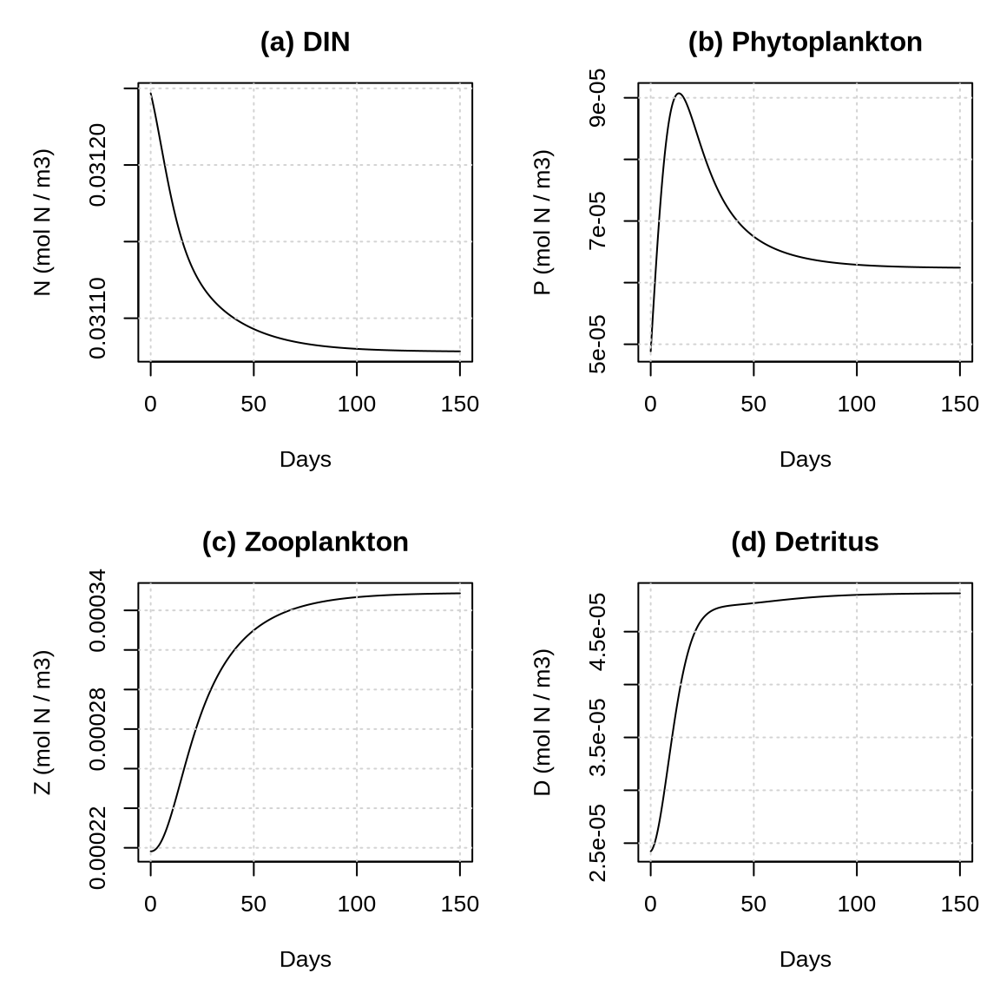

6 Week 6: Marine Biology
This tutorial consists of three parts. In the first part, we run a nutrient–phytoplankton–zooplankton–detritus (NPZD) model in isolation for a single ocean box. To do so, we define a function, run_npzd(), and use it to explore the model’s behaviour under different conditions, including changes in parameter values, ocean temperature, and sea ice extent. In the second part, we run QUEST with dynamically coupled atmosphere, ocean, and air–sea carbon exchange modules, comparing configurations with NPZD enabled and disabled using eigenanalysis. In the third part, we investigate how NPZD affects the atmospheric carbon response to anthropogenic carbon emissions.
6.1 NPZD Model
6.1.1 Load configuration
We begin by loading the configuration file that contains the initial conditions and parameter values
rm(list = ls())
# Load the QUEST package:
library(quest)
# Set the path to the configuration files:
config.path <- "/global/teaching-project/sg5112000/shared_files/config"
# Load the configuration files:
config <- config_load(path = config.path)6.1.2 NPZD function
Next, let’s define an NPZD function for a single ocean box, neglecting transport and coupling to the carbon cycle. This simplified setup allows us to focus on developing an intuitive understanding of how NPZD works.
run_npzd <- function(state, params, times) {
# Parameter values
a <- params$a
b <- params$b
c <- params$c
d <- params$d
e <- params$e
k <- params$k
r_P <- params$r_P
r_Z <- params$r_Z
w_D <- params$w_D
s <- params$s
alpha <- params$alpha
beta <- params$beta
gamma <- params$gamma
lambda <- params$lambda
mu <- params$mu
phi <- params$phi
psi <- params$psi
T_ref_npzd <- params$T_ref_npzd
R_gas <- params$R_gas
Ea_a <- params$Ea_a
Ea_lambda <- params$Ea_lambda
Ea_r <- params$Ea_r
Ea_s <- params$Ea_s
Ea_d <- params$Ea_d
Ea_phi <- params$Ea_phi
# Initial values
DIN_ocn_SH <- state[["DIN_ocn_SH"]]
P_bio_SH <- state[["P_bio_SH"]]
Z_bio_SH <- state[["Z_bio_SH"]]
DET_ocn_SH <- state[["DET_ocn_SH"]]
T_ocn_SH <- state[["T_ocn_SH"]]
A_sic <- state[["A_sic"]]
# Store results
N <- numeric(length(times))
P <- numeric(length(times))
Z <- numeric(length(times))
D <- numeric(length(times))
# Store initial values
N[1] <- DIN_ocn_SH
P[1] <- P_bio_SH
Z[1] <- Z_bio_SH
D[1] <- DET_ocn_SH
# Euler integration
dt <- times[2] - times[1]
for (i in 2:length(times)) {
# -------------------------
# Arrhenius
# -------------------------
arrhenius <- function(r0, Ea, T_ocn, T_ref_npzd, R_gas) {
rate <- r0 * exp(Ea / R_gas * (1 / T_ref_npzd - 1 / T_ocn))
return(rate)
}
bio_rates <- function(T_ocn, A_sic) {
a_eff <- a * (1 - A_sic)
list(
a_T = arrhenius(a_eff, Ea_a, T_ocn, T_ref_npzd, R_gas),
phi_T = arrhenius(phi, Ea_phi, T_ocn, T_ref_npzd, R_gas)
)
}
rates_SH <- bio_rates(T_ocn_SH, A_sic)
# -------------------------
# Fluxes
# -------------------------
# Uptake of N by P
N_DIN2P_uptake_SH <- DIN_ocn_SH / (e + DIN_ocn_SH) * rates_SH$a_T / (b + c * P_bio_SH) * P_bio_SH
# Grazing of P by Z
N_P2Z_grazing_SH <- lambda * P_bio_SH^2 / (mu^2 + P_bio_SH^2) * Z_bio_SH
# Grazing detritus
N_P2DET_grazing_SH <- (1 - alpha - beta) * N_P2Z_grazing_SH
# Z-growth
N_Z_growth_SH <- alpha * N_P2Z_grazing_SH
# Z-excretion
N_Z2DIN_excretion_SH <- beta * N_P2Z_grazing_SH
# Mortality of P (sinking)
N_P2DET_mort_SH <- s * P_bio_SH
# Mortality of Z
N_Z2DET_mort_SH <- d * Z_bio_SH^2
# Remineralization
N_DET2DIN_remin_SH <- rates_SH$phi_T * DET_ocn_SH
# -------------------------
# Tendencies
# -------------------------
# Nutrients
dDIN_bio_SH <- N_Z2DIN_excretion_SH + N_DET2DIN_remin_SH - N_DIN2P_uptake_SH
# Phytoplankton
dP_bio_SH <- N_DIN2P_uptake_SH - N_P2Z_grazing_SH - N_P2DET_mort_SH
# Zooplankton
dZ_bio_SH <- N_Z_growth_SH - N_Z2DET_mort_SH # - N_Z2DIN_RH_SH
# Detritus
dDET_bio_SH <- N_P2DET_mort_SH + N_Z2DET_mort_SH + N_P2DET_grazing_SH - N_DET2DIN_remin_SH
# Rename
dDIN_ocn_SH <- dDIN_bio_SH # assuming no transport
dDET_ocn_SH <- dDET_bio_SH # assuming no transport
DIN_ocn_SH <- DIN_ocn_SH + dDIN_ocn_SH * dt
P_bio_SH <- P_bio_SH + dP_bio_SH * dt
Z_bio_SH <- Z_bio_SH + dZ_bio_SH * dt
DET_ocn_SH <- DET_ocn_SH + dDET_ocn_SH * dt
# Store results
N[i] <- DIN_ocn_SH
P[i] <- P_bio_SH
Z[i] <- Z_bio_SH
D[i] <- DET_ocn_SH
}
df <- data.frame(N, P, Z, D)
# Plot results
par(mfrow = c(2, 2), mar = c(5, 5, 3, 1))
days <- times / 86400
plot(x = days, y = N, type = "l", xlab = "Days", ylab = "N (mol N / m3)", main = "(a) DIN")
grid()
plot(x = days, y = P, type = "l", xlab = "Days", ylab = "P (mol N / m3)", main = "(b) Phytoplankton")
grid()
plot(x = days, y = Z, type = "l", xlab = "Days", ylab = "Z (mol N / m3)", main = "(c) Zooplankton")
grid()
plot(x = days, y = D, type = "l", xlab = "Days", ylab = "D (mol N / m3)", main = "(d) Detritus")
grid()
return(df)
}6.1.3 NPZD experiment (1): Default setting
Let us now apply this function for a given set of initial conditions, parameter values, and time steps:
# Load the initial values
state <- config$initial_values
# Load the parameter values
params <- config$params
# time steps
dt <- 60 * 60 # unit: seconds
t_end <- 150 * 86400
times <- seq(0, t_end, by = dt)
df <- run_npzd(state, params, times)
You can access the \(N\), \(P\), \(Z\), and \(D\) values by typing df. You can sum up all nitrogen pools for each time step using rowSums(df).
Quiz Question 1: Does the NPZD model conserve Nitrogen?
Quiz Question 2: How large is the nitrogen concentration of the system?
Quiz Question 3: Why is dissolved inorganic nitrogen (DIN) decreasing?
Quiz Question 4: What drives the decline of the phytoplankton population after an initial increase?
Quiz Question 5: Why do the N, P, Z, and D pools level off after some time?
6.1.4 NPZD experiment (2): Reduce grazing
Parameter values are difficult to constrain by observations and must be tuned. Let us find out what happens if we change a parameter value that controls grazing. We will reduce \(\lambda\) to 20% of its original value.
# Load the initial values
state <- config$initial_values
# Load the parameter values
params <- config$params
params$lambda <- params$lambda * 0.2
# time steps
dt <- 60 * 60 # unit: seconds
t_end <- 150 * 86400
times <- seq(0, t_end, by = dt)
df <- run_npzd(state, params, times)Quiz Question 6: Why does a decrease in \(\lambda\) lead to a higher equilibrium phytoplankton biomass?
Quiz Question 7: Is the total N content still the same as in the previous experiment?
6.1.5 NPZD experiment (3): Increase ocean temperature
Let’s keep the new grazing parameter and also increase the ocean temperature by 10K.
# Load the initial values
state <- config$initial_values
# Increase ocean temperature by 10K
state[["T_ocn_SH"]] <- state[["T_ocn_SH"]] + 10
# Load the parameter values
params <- config$params
params$lambda <- params$lambda * 0.2
# time steps
dt <- 60 * 60 # unit: seconds
t_end <- 150 * 86400
times <- seq(0, t_end, by = dt)
df <- run_npzd(state, params, times)Quiz Question 8: How does the increase in temperature affect the phytoplankton biomass?
6.1.6 NPZD experiment (4): Decrease sea ice extent
In addition to the changes already implemented above, let us now also decrease the sea ice cover fraction from 0.23 to 0.0.
# Load the initial values
state <- config$initial_values
state[["T_ocn_SH"]] <- state[["T_ocn_SH"]] + 10
state[["A_sic"]] <- 0.0
# Load the parameter values
params <- config$params
params$lambda <- params$lambda * 0.2
# time steps
dt <- 60 * 60 # unit: seconds
t_end <- 150 * 86400
times <- seq(0, t_end, by = dt)
df <- run_npzd(state, params, times)Quiz Question 9: How does the decrease in sea ice extent affect the movement of nitrogen between the organic and inorganic nitrogen pools?
6.2 Eigenanalysis
Now that we have developed an intuitive understanding of NPZD dynamics, let us run QUEST with its dynamically coupled NPZD module to investigate how marine biota influence the equilibrium climate state. In these experiments, we dynamically couple the following modules:
- Atmosphere
- Ocean
- Air-sea carbon exchange
- NPZD (on/off)
6.2.1 Dynamic air-sea carbon exchange turned off
Let’s setup the model configuration.
rm(list = ls())
# Load the QUEST package:
library(quest)
# Set the path to the configuration files:
config.path <- "/global/teaching-project/sg5112000/shared_files/config"
# Load the configuration files:
config <- config_load(path = config.path)
# Set the flags to what we want
config$flags$run_AirSeaCarbon <- TRUE
config$flags$run_atmosphere <- TRUE
config$flags$run_ocean <- TRUE
config$flags$run_npzd <- FALSE
config$flags$run_land <- FALSE
config$flags$run_sic <- FALSE
config$flags$run_icesheets <- FALSE
config$flags$anthropogenic_emissions <- FALSE
config$flags$prescribed_CO2 <- FALSE
config$flags$prescribed_seaice <- FALSE
config$flags$diagnose_carbonates <- FALSENow we spin up the model for 10000 years.
times <- seq(-10000, 0, by = 1)
output <- core_run_esm(config = config, times = times)
saveRDS(output, "output_W06_config_01.rds")
# Create initialization file from this spinup
utils_write_new_init(
input_file = "output_W06_config_01.rds",
output_file = "config_init_W06_config_01.R",
final_year = TRUE
)Now we conduct the eigenanalysis for this model configuration.
# Get the spun up state variables
state_eq <- source("config_init_W06_config_01.R")$value
# Select state variables that will be perturbed
select_variables <- c("C_atm", "T_atm_L", "T_atm_H", "T_ocn_SL", "T_ocn_SH", "T_ocn_DL", "T_ocn_DH")
# Find the equilibria
equilibria <- eval_equilibria(config, state_eq, select_variables = select_variables, n_starts = 100)
# Conduct eigenanalysis
stability_results <- eval_eigenvalues(config,
equilibria_dimensionless = equilibria$dimensionless,
state_eq = state_eq,
state_min_active = equilibria$state_min_active,
state_max_active = equilibria$state_max_active,
delta_time = 50
)
stability_results_NPZD_off <- stability_results
saveRDS(stability_results_NPZD_off, "W06_stability_results_NPZD_off.rds")6.2.2 NPZD turned on
Let us repeat the same workflow but for NPZD turned on. The spinup of 10,000 years for QUEST with NPZD turned on takes about 30 minutes. To save you some time, I have spun up the model for you. The spun up state is saved as config_init_W06_config_02.R and is stored in our shared group folder.
# Get the spun up state variables
state_eq <- source("config_init_W06_config_02.R")$value
# Select state variables that will be perturbed
select_variables <- c("C_atm", "T_atm_L", "T_atm_H", "T_ocn_SL", "T_ocn_SH", "T_ocn_DL", "T_ocn_DH")
# Find the equilibria
equilibria <- eval_equilibria(config, state_eq, select_variables = select_variables, n_starts = 100)
# Conduct eigenanalysis
stability_results <- eval_eigenvalues(config,
equilibria_dimensionless = equilibria$dimensionless,
state_eq = state_eq,
state_min_active = equilibria$state_min_active,
state_max_active = equilibria$state_max_active,
delta_time = 50
)
stability_results_AirSeaCarbon_on <- stability_results
saveRDS(stability_results_AirSeaCarbon_on, "W06_stability_results_NPZD_on.rds")6.2.3 Comparing the Jacobians
Let us now compare the results from both simulations
# NPZD turned on:
NPZD_on <- readRDS("W06_stability_results_NPZD_on.rds")
# NPZD turned off:
NPZD_off <- readRDS("W06_stability_results_NPZD_off.rds")
# Jacobian
delta_jacobian <- NPZD_on$equilibrium_1$jacobian - NPZD_off$equilibrium_1$jacobian
print(round(NPZD_on$equilibrium_1$jacobian, 3))
print(round(NPZD_off$equilibrium_1$jacobian, 3))
print(round(delta_jacobian, 3))Quiz Question 10: Does NPZD affect the signs of the Jacobian matrix elements?
Quiz Question 11: How does NPZD affect the response of atmospheric carbon to an atmospheric carbon perturbation?
6.2.4 Comparing the eigenmodes
# Eigenvalues
delta_lambda <- NPZD_on$equilibrium_1$eigenvalues[1] - NPZD_off$equilibrium_1$eigenvalues[1]
print(NPZD_on$equilibrium_1$eigenvalues[1])
print(NPZD_off$equilibrium_1$eigenvalues[1])
print(delta_lambda)
# Timescales
delta_timescales <- NPZD_on$equilibrium_1$timescales[1] - NPZD_off$equilibrium_1$timescales[1]
print(NPZD_on$equilibrium_1$timescales[1])
print(NPZD_off$equilibrium_1$timescales[1])
print(delta_timescales)Quiz Question 12: How does NPZD affect the time scale of the dominant eigenmode?
# dominant eigenvector NPZD on
domVec_NPZD_on <- NPZD_on$equilibrium_1$eigenvectors[, 1]
print(domVec_NPZD_on)
# dominant eigenvector NPZD off
domVec_NPZD_off <- NPZD_off$equilibrium_1$eigenvectors[, 1]
print(domVec_NPZD_off)Quiz Question 13: Which variable contributes most to the dominant eigenmode when NPZD is turned off?
Quiz Question 14: How does adding NPZD affect the balance between restoring and amplifying processes in the vicinity of the equilibrium?
6.3 Anthropogenic Emissions
Let us now simulate the effects of historical anthropogenic carbon emissions on ocean carbon chemistry. To do this, we need to make two changes to the model configuration: enable anthropogenic emissions and activate the carbonate-system diagnostics. The following chunk runs the simulation from 1800 to 2024. It may take a few minutes to complete because the carbonate-system diagnostics add substantial computational overhead. Let us first setup the model configuration:
rm(list = ls())
# Load the QUEST package:
library(quest)
# Set the path to the configuration files:
config.path <- "/global/teaching-project/sg5112000/shared_files/config"
# Load the configuration files:
config <- config_load(path = config.path)
# Set the flags to what we want
config$flags$run_AirSeaCarbon <- TRUE
config$flags$run_atmosphere <- TRUE
config$flags$run_ocean <- TRUE
config$flags$run_npzd <- FALSE
config$flags$run_land <- FALSE
config$flags$run_sic <- FALSE
config$flags$run_icesheets <- FALSE
config$flags$anthropogenic_emissions <- TRUE
config$flags$prescribed_CO2 <- FALSE
config$flags$prescribed_seaice <- TRUE
config$flags$diagnose_carbonates <- FALSE6.3.1 NPZD turned off
# Get the spun-up state
state_eq <- source("config_init_W06_config_01.R")$value
config$initial_calues <- state_eq
# flags
config$flags$run_npzd <- FALSE
# Run model and save output
times <- seq(1800, 2024, by = 1)
output <- core_run_esm(config = config, times = times)
saveRDS(output, "output_W06_config_01.rds")
output <- readRDS("output_W06_config_01.rds")
utils_plot(config, output, variables = c(
"anthr_emissions", "Carbon_total", "C_atm_ppmv",
"T_atm_global", "A_sic", "F_L",
"F_H", "P_bio_SL", "Z_bio_SL",
"DET_ocn_SL", "DIC_global", "DIN_ocn_SL"
), my.xlim = c(1800, 2024), PNGfile = FALSE)6.3.2 NPZD turned on
# Get the spun-up state
state_eq <- source("config_init_W06_config_02.R")$value
config$initial_calues <- state_eq
# Flags
config$flags$run_npzd <- TRUE
# Run model and save output
times <- seq(1800, 2024, by = 1)
output <- core_run_esm(config = config, times = times)
saveRDS(output, "output_W06_config_02.rds")
output <- readRDS("output_W06_config_02.rds")
utils_plot(config, output, variables = c(
"anthr_emissions", "Carbon_total", "C_atm_ppmv",
"T_atm_global", "A_sic", "F_L",
"F_H", "P_bio_SL", "Z_bio_SL",
"DET_ocn_SL", "DIC_global", "DIN_ocn_SL"
), my.xlim = c(1800, 2024), PNGfile = FALSE)Quiz Question 15: How does NPZD affect the amount of carbon in the atmosphere?